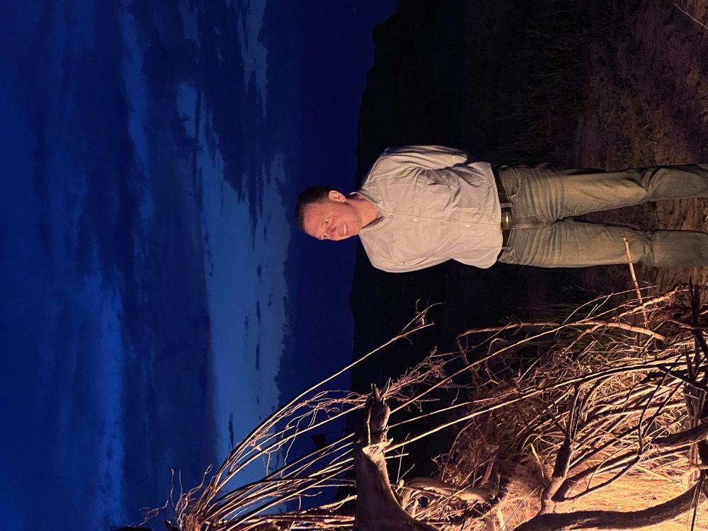
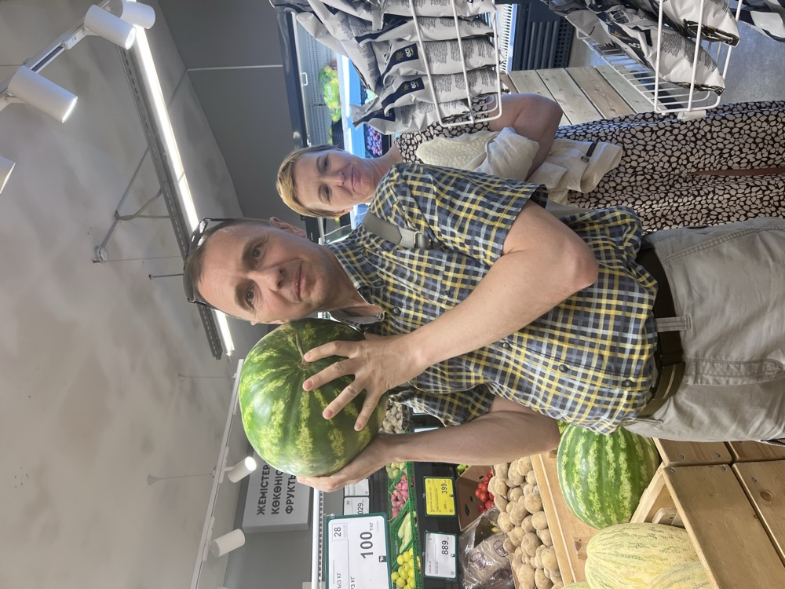

Детский писатель · советский магический реализм
Владимир Русин
Вова жил на улице Довженко, в доме номер 25, в квартире 60, на третьем этаже пятиэтажного дома. Днём он учился в школе, гулял во дворе, делал уроки, а вечером, если вовремя ложился спать, мама рассказывала ему сказку.
Вова вырос, и теперь у него свои дети — для них он и написал эти сказки. Дети давно выросли, а сказки не состарились: они так и живут на просторах сети и согревают новых девчонок и мальчишек.

